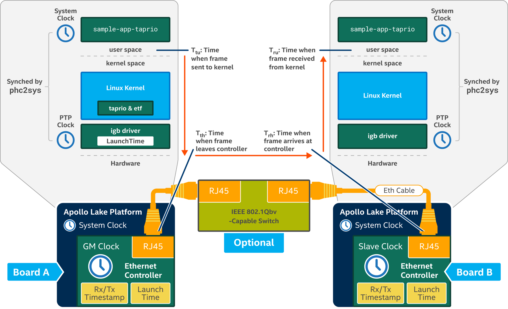

Time Aware Shaper as described by IEEE 802.1Qbv refers to creating a protected transmission window for scheduled traffic to ensure the transmission latency for this traffic pattern is low and bounded. In all of the scenarios, the sample-app-taprio application transmits scheduled traffic according to the transmit schedules, as shown below.

In scheduled traffic, all frames are transmitted and received periodically, that is, meeting the cycle-time defined for the scheduled traffic. Therefore, an important performance indicator for scheduled traffic is to measure its inter-packet latency distribution over an extended period of time.
This demo focuses on the benefits of applying different software and hardware technology related to Time Aware Shaper. The scenarios capture 4 important time measurements:
IEEE 802.1Qbv Time Aware Shaper is a TSN technology related to transmit path at the sender. In real-world TSN use cases, measure "Tru - Ttu" where other advanced in-kernel networking technologies such as eXpress Data Path (XDP) in the receive path may be applied. However, to measure the benefits of IEEE 802.1Qbv demo, we measure transmission latency improvement across the scenarios by using "Trh- Ttu". This demo uses Trh (and not T th) to include transmission latency across the IEEE 802.1Qbv switch. This reveals any misconfiguration in the TSN switch that would contribute to increase of transmission latency with or without the TSN switch. In addition, "Trh- Ttu" measurement also reveals the propagation latency when a frame enters kernel-space and eventually leaves the underlying Ethernet controller too.
Scheduled traffic is transmitted in a cyclical manner. The frames of scheduled traffic must be received consistently at Board B every cycle. The inter-packet latency distribution graph profiles the performance of each scenario of this demo.
For details on the network analysis for each scenario of this demo, refer to: